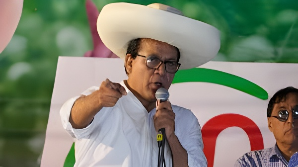

Le 13 mai 2026, le parquet péruvien a requis une peine de cinq ans et quatre mois d'emprisonnement contre Roberto Sánchez, candidat de gauche de Juntos por el Perú, qualifié quelques heures plus tôt pour affronter Keiko Fujimori lors du second tour présidentiel du 7 juin. Accusé de fausses déclarations financières auprès de l'autorité électorale entre 2018 et 2020, il conteste les accusations et maintient sa candidature. Le Pérou se retrouve face à une situation inédite : un candidat à la présidence sous le coup d'une réquisition pénale en pleine campagne.
Roberto Helbert Sánchez Palomino, né le 3 février 1969 à Huaral (province agricole à 80 km au nord de Lima), est psychologue de formation, diplômé de l'Université nationale de San Marcos, avec une maîtrise en politiques sociales à la Pontificia Universidad Católica del Perú. Il est entré dans la sphère politique par les organisations locales et la gestion municipale avant de rejoindre Juntos por el Perú, dont il prend la présidence en 2017.
Son ascension nationale tient à son passage au gouvernement de Pedro Castillo : nommé ministre du Commerce extérieur et du Tourisme en juillet 2021, il est le seul membre du cabinet à ne jamais avoir été remplacé durant les seize mois du mandat chaotique de Castillo — jusqu'à sa démission le jour du coup de force manqué de décembre 2022. Cette loyauté sans solidarité de façade lui a permis d'échapper aux poursuites liées à la tentative de dissolution du Congrès. Il est également élu député pour la période 2021–2026 et, depuis 2024, mandataire légal de Juntos por el Perú.
Lors de la présidentielle de 2026, Sánchez se présente comme le « candidat castilliste », promettant de libérer Pedro Castillo — condamné en novembre 2025 à onze ans et demi de prison pour rébellion et complot —, d'engager une nouvelle Assemblée constituante, de nationaliser les ressources naturelles et de réformer le rôle du Congrès. Il bénéficie du soutien explicite de Gustavo Petro, président de la Colombie, et de Antauro Humala.
À quelques jours du scrutin, les sondages le créditaient d'à peine 3 à 9 % des intentions de vote. La fragmentation extrême de l'électorat (35 candidats) lui permet pourtant de mobiliser les zones rurales du Sud — Cusco, Ayacucho, Puno — les plus touchées par la répression des manifestations post-Castillo, et de dépasser Rafael López Aliaga pour la deuxième place avec environ 12 % des suffrages, soit une avance d'environ 18 800 voix.
Nommé ministre du Commerce extérieur et du Tourisme dans le gouvernement Castillo. Seul ministre à ne jamais avoir été remplacé.
Démissionne le jour du coup de force de Castillo. Échappe aux poursuites liées à la tentative de dissolution du Congrès.
Prend le contrôle de Juntos por el Perú en tant que mandataire légal, non sans contestations internes des fondateurs historiques du parti.
Premier tour : obtient ~12 % des voix. Qualification au second tour confirmée après dépouillement quasi-complet, le 13 mai.
Le parquet requiert cinq ans et quatre mois de prison pour fausses déclarations financières à l'ONPE entre 2018 et 2020.
Audience prévue : le tribunal décidera si l'affaire est renvoyée devant une cour pour un procès pénal oral.
L'affaire porte sur des irrégularités dans les rapports financiers de Juntos por el Perú lors de campagnes pour des élections régionales et municipales entre 2018 et 2020. Selon l'acte d'accusation transmis par le parquet, Roberto Sánchez et son frère William Sánchez auraient perçu plus de 280 000 soles péruviens (environ 81 720 dollars) en contributions et cotisations de membres du parti, sans les déclarer auprès de l'Oficina Nacional de Procesos Electorales (ONPE), l'autorité électorale. En dollars, les contributions non déclarées imputées à Sánchez sont évaluées à plus de 57 000 dollars.
Le parquet retient deux chefs d'accusation : fausse déclaration dans une procédure administrative et falsification d'informations relatives aux contributions et revenus d'une organisation politique. L'affaire avait déjà été soumise aux tribunaux en janvier 2026, mais la justice l'avait alors partiellement rejetée, demandant aux procureurs de reformuler leur dossier. Ces derniers ont procédé à cette reformulation, et l'acte de réquisition a été rendu public le 13 mai 2026, le jour même où la qualification de Sánchez pour le second tour devenait quasi-certaine.
Malgré la gravité de la réquisition pénale, Roberto Sánchez conserve intégralement son droit de se présenter à l'élection. La Constitution péruvienne et la loi électorale disposent qu'une candidature ne peut être annulée que par une condamnation définitive confirmée en appel. L'affaire se trouvant encore au stade judiciaire intermédiaire — avant même qu'un procès pénal oral ne soit ordonné —, Sánchez garde tous ses droits politiques et peut poursuivre sa campagne normalement.
L'audience du 27 mai 2026 déterminera si le dossier est renvoyé devant une cour pénale pour un procès au fond. Si un procès s'ouvre, sa conclusion, a fortiori définitive en appel, interviendrait bien après le second tour du 7 juin — voire après l'investiture présidentielle du 28 juillet, si Sánchez remportait l'élection.
| Accusation | Détail |
|---|---|
| Fausse déclaration administrative | Contributions non déclarées à l'ONPE (2018–2020) |
| Falsification d'informations | Revenus et apports de Juntos por el Perú falsifiés |
| Montant contesté | ~280 000 soles / 81 720 $ (Sánchez + son frère William) |
| Peine requise | 5 ans et 4 mois d'emprisonnement |
| Interdiction requise | Exclusion définitive de la direction de Juntos por el Perú |
La chronologie frappe les observateurs : la réquisition pénale est rendue publique le 13 mai 2026, le jour même où les résultats quasi-définitifs (99,94 % des procès-verbaux dépouillés) confirment la qualification de Sánchez pour le second tour. Les mouvements de gauche dénoncent une manœuvre judiciaire visant à déstabiliser leur candidat à un moment stratégique. Les groupes d'opposition réclament, de leur côté, son retrait de la course au nom de la « probité morale ».
Le politologue Fernando Tuesta note que la démocratie péruvienne cumule les fragilités : fragmentation extrême, institutions discréditées, et maintenant la perspective d'un second tour opposant une candidate condamnée pour des manœuvres illégales de financement politique — Keiko Fujimori, condamnée en 2023 — à un candidat sous réquisition pénale active. Pour les marchés financiers, la confirmation du duel Fujimori-Sánchez a fait rebondir le dollar au-dessus de 3,45 soles, évoquant le précédent de 2021 et la crainte d'une nouvelle présidence incontrôlable.
« La responsabilité de Roberto Sánchez est engagée dans les délits de fausse déclaration dans une procédure administrative et de falsification d'informations sur les contributions et revenus d'organisations politiques. »
— Communiqué du Ministère public péruvien, 13 mai 2026Le Pérou s'achemine vers un second tour historiquement singulier : d'un côté Keiko Fujimori, héritière d'une droite conservatrice marquée par les crimes de l'ère Fujimori et ses propres condamnations judiciaires passées ; de l'autre Roberto Sánchez, candidat de la gauche castilliste désormais sous le coup d'une réquisition pénale. Aucun des deux n'incarne la rupture avec les dérives qui ont épuisé la démocratie péruvienne depuis une décennie. Ce que ce second tour révèle, c'est moins le choix entre deux projets de société que la profondeur d'une crise de légitimité dont le prochain président — quel qu'il soit — héritera dès le 28 juillet 2026.
El 13 de mayo de 2026, la fiscalía peruana solicitó una pena de cinco años y cuatro meses de prisión contra Roberto Sánchez, candidato de izquierda de Juntos por el Perú, clasificado pocas horas antes para enfrentarse a Keiko Fujimori en la segunda vuelta presidencial del 7 de junio. Acusado de falsas declaraciones financieras ante la autoridad electoral entre 2018 y 2020, el candidato rechaza los cargos y mantiene su candidatura. Perú se enfrenta a una situación inédita: un candidato a la presidencia con una petición penal en su contra en plena campaña.
Roberto Helbert Sánchez Palomino, nacido el 3 de febrero de 1969 en Huaral (provincia agrícola a 80 km al norte de Lima), es psicólogo de formación, graduado de la Universidad Nacional Mayor de San Marcos, con una maestría en Políticas Sociales en la Pontificia Universidad Católica del Perú. Entró en la esfera política a través de organizaciones locales y la gestión municipal antes de unirse a Juntos por el Perú, cuya presidencia asumió en 2017.
Su ascenso nacional está ligado a su paso por el gobierno de Pedro Castillo: nombrado ministro de Comercio Exterior y Turismo en julio de 2021, fue el único miembro del gabinete que nunca fue reemplazado durante los dieciséis meses del caótico mandato de Castillo, hasta su renuncia el día del fallido golpe de Estado de diciembre de 2022. Esa lealtad sin complicidad aparente le permitió evitar los procesos relacionados con el intento de disolución del Congreso. También es congresista para el periodo 2021–2026 y, desde 2024, apoderado legal de Juntos por el Perú.
En las presidenciales de 2026, Sánchez se presenta como el «candidato castillista», prometiendo liberar a Pedro Castillo —condenado en noviembre de 2025 a once años y medio de prisión por rebelión y conspiración—, convocar una nueva Asamblea Constituyente, nacionalizar los recursos naturales y reformar el papel del Congreso. Cuenta con el respaldo explícito de Gustavo Petro y de Antauro Humala.
Pocos días antes de los comicios, las encuestas le atribuían apenas entre el 3 y el 9 % de la intención de voto. Sin embargo, la extrema fragmentación del electorado (35 candidatos) le permitió movilizar las zonas rurales del Sur —Cusco, Ayacucho, Puno—, las más afectadas por la represión de las protestas post-Castillo, y superar a Rafael López Aliaga para el segundo puesto con cerca del 12 % de los sufragios, una ventaja de unos 18 800 votos.
Nombrado ministro de Comercio Exterior y Turismo en el gobierno Castillo. Único ministro que no fue reemplazado jamás.
Renuncia el día del golpe fallido de Castillo. Evita los procesos vinculados al intento de disolución del Congreso.
Toma el control de Juntos por el Perú como apoderado legal, no sin contestaciones internas de los fundadores históricos del partido.
Primera vuelta: obtiene ~12 % de los votos. Clasificación confirmada tras el recuento casi completo, el 13 de mayo.
La fiscalía solicita cinco años y cuatro meses de prisión por falsas declaraciones financieras a la ONPE entre 2018 y 2020.
Audiencia prevista: el tribunal decidirá si el caso es remitido a juicio penal oral.
El caso se refiere a irregularidades en los informes financieros de Juntos por el Perú durante campañas para elecciones regionales y municipales entre 2018 y 2020. Según el escrito de acusación presentado por la fiscalía, Roberto Sánchez y su hermano William Sánchez habrían recibido más de 280 000 soles peruanos (unos 81 720 dólares) en concepto de aportes y cuotas de afiliados del partido, sin declararlos ante la Oficina Nacional de Procesos Electorales (ONPE). Los aportes no declarados imputados exclusivamente a Sánchez se estiman en más de 57 000 dólares.
La fiscalía retiene dos cargos: falsa declaración en procedimiento administrativo y falseamiento de la información sobre aportaciones e ingresos de una organización política. El caso ya había sido sometido a los tribunales en enero de 2026, pero la justicia lo rechazó parcialmente, solicitando a los fiscales que reformularan su escrito. Estos procedieron a dicha reformulación, y el requerimiento fue hecho público el 13 de mayo de 2026, el mismo día en que la clasificación de Sánchez para la segunda vuelta se hacía casi segura.
A pesar de la gravedad del requerimiento penal, Roberto Sánchez conserva íntegramente su derecho a presentarse a las elecciones. La Constitución peruana y la ley electoral establecen que una candidatura solo puede ser anulada mediante una condena definitiva confirmada en apelación. Al encontrarse el caso todavía en la fase judicial intermedia —antes incluso de que se ordene un juicio penal oral—, Sánchez mantiene todos sus derechos políticos y puede continuar su campaña con normalidad.
La audiencia del 27 de mayo de 2026 determinará si el expediente es remitido a un tribunal penal para un juicio de fondo. Si se abre un juicio, su conclusión, y con mayor razón definitiva en apelación, se produciría mucho después de la segunda vuelta del 7 de junio —e incluso después de la investidura presidencial del 28 de julio, si Sánchez ganara las elecciones.
| Cargo | Detalle |
|---|---|
| Falsa declaración administrativa | Aportes no declarados a la ONPE (2018–2020) |
| Falseamiento de información | Ingresos y aportes de Juntos por el Perú falsificados |
| Monto impugnado | ~280 000 soles / 81 720 $ (Sánchez + su hermano William) |
| Pena solicitada | 5 años y 4 meses de prisión |
| Inhabilitación solicitada | Exclusión definitiva de la dirección de Juntos por el Perú |
La cronología llama la atención de los observadores: el requerimiento penal se hace público el 13 de mayo de 2026, el mismo día en que los resultados casi definitivos (99,94 % de las actas escrutadas) confirman la clasificación de Sánchez para la segunda vuelta. Los movimientos de izquierda denuncian una maniobra judicial destinada a desestabilizar a su candidato en un momento estratégico. Los grupos de oposición exigen, por su parte, su retirada de la contienda en nombre de la «probidad moral».
El politólogo Fernando Tuesta señala que la democracia peruana acumula fragilidades: fragmentación extrema, instituciones desacreditadas, y ahora la perspectiva de una segunda vuelta entre una candidata condenada por maniobras ilegales de financiamiento político —Keiko Fujimori, condenada en 2023— y un candidato con un requerimiento penal activo. Para los mercados financieros, la confirmación del duelo Fujimori-Sánchez hizo rebotar el dólar por encima de los 3,45 soles, evocando el precedente de 2021.
«A Roberto Sánchez se le atribuye ser autor de los delitos de falsa declaración en procedimiento administrativo y falseamiento de la información sobre aportaciones e ingresos de organizaciones políticas.»
— Comunicado del Ministerio Público peruano, 13 de mayo de 2026Perú se encamina hacia una segunda vuelta históricamente singular: por un lado Keiko Fujimori, heredera de una derecha conservadora marcada por los crímenes de la era Fujimori y sus propias condenas judiciales pasadas; por el otro Roberto Sánchez, candidato de la izquierda castillista con un requerimiento penal activo. Ninguno de los dos encarna una ruptura con las derivas que han agotado la democracia peruana durante una década. Lo que esta segunda vuelta revela es menos la elección entre dos proyectos de sociedad que la profundidad de una crisis de legitimidad de la que el próximo presidente —sea quien sea— heredará desde el 28 de julio de 2026.